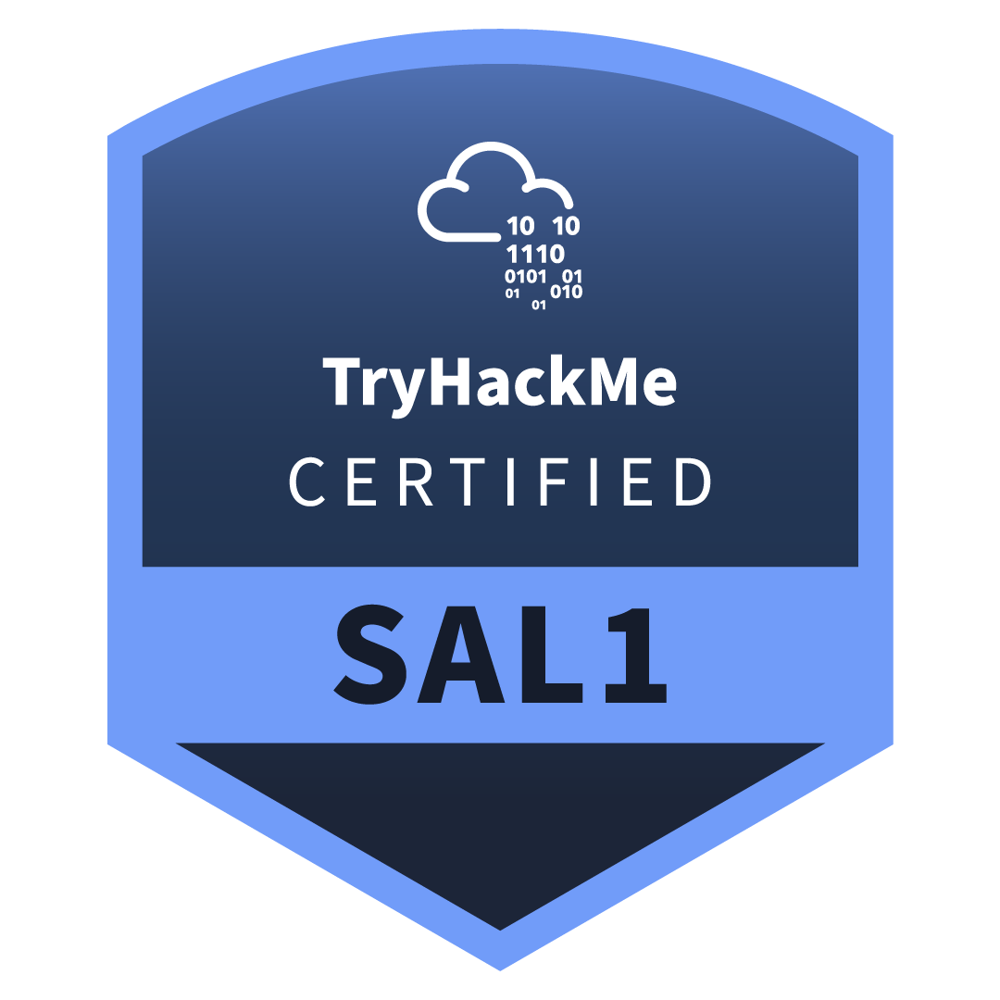
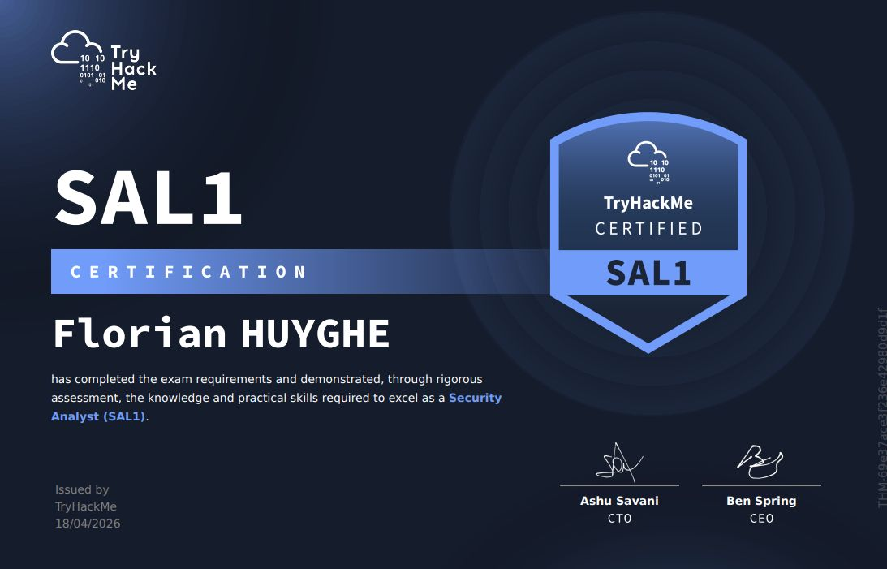

Certifications
Security Analyst Level 1 (SAL1)
Le premier niveau des certifications « Security Analyst » de TryHackMe, centré sur le triage d'alertes et l'investigation initiale en environnement SOC.
Détail par section
Mon retour d'expérience
SAL1 m'a fait basculer côté défense : passer des heures à trier des alertes SIEM, distinguer le bruit du signal, et reconstituer une chronologie d'attaque à partir de logs bruts.
J'y ai appris à trier le bruit d'alertes SIEM pour isoler les signaux qui comptent, et à documenter une investigation de bout en bout comme le ferait un analyste SOC en poste.
- Triage d'alertes SIEM et priorisation
- Reconstitution d'une chronologie d'attaque à partir de logs
- Investigation initiale sur environnements Windows et Linux
Mon post LinkedIn

Comment se déroule l'examen
SAL1 se compose de 3 sections, chacune passée dans une fenêtre de 24h : un QCM de 80 questions (200 points, 1h), puis deux scénarios de simulateur SOC (400 points chacun, 2h chacun) — soit 1000 points au total, avec un score de passage fixé à 750. C'est exactement la structure que l'on retrouve dans le détail par section ci-dessus. Un retake gratuit est proposé en cas d'échec.
Le bilan : les + et les -
Au-delà de mon expérience, voici une synthèse plus complète du certificat, enrichie par les retours de la communauté.
+ Points forts
− Points faibles
Ces limites ne m'ont pas empêché d'en tirer un vrai exercice formateur, mais elles valent la peine d'être connues avant de s'investir.
Synthèse enrichie par les retours de la communauté, notamment la review détaillée de Carson Shaffer.